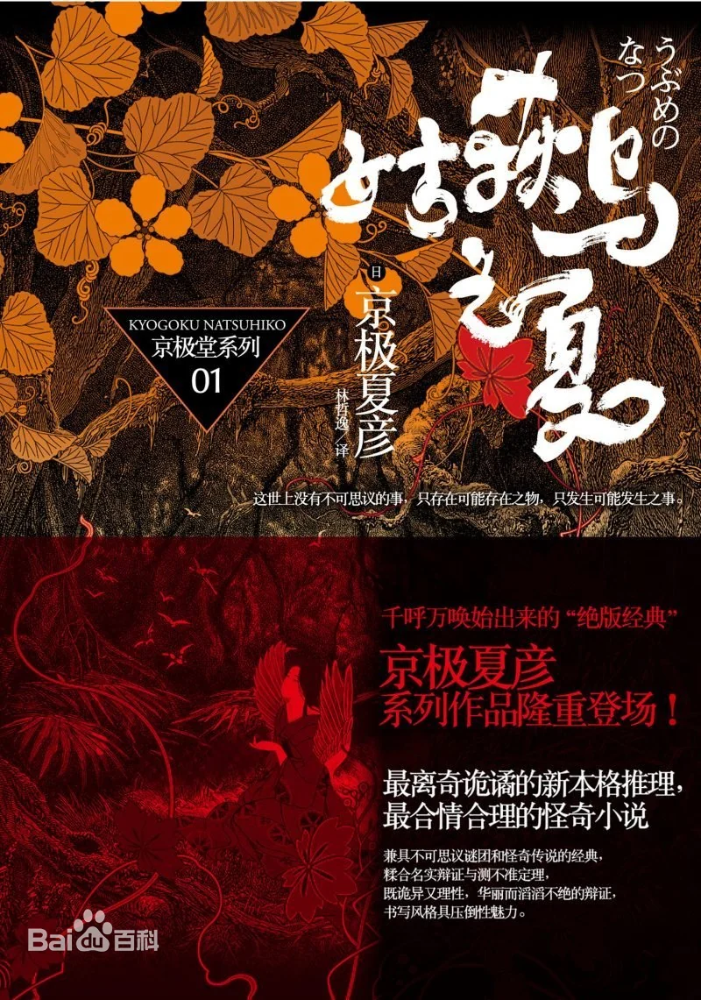

京极夏彦（きょうごく なつひこ），原名大江胜彦，1963年3月26日出生于北海道（Hokkaido）小樽市，日本小说家、妖怪研究家、艺术总监。 世界妖怪会议评议员（主办）、关东水木会员、东亚怪异学会会员。《怪谈之怪》发起人之一。
出生于1963年的京极夏彦，以前所从事的所谓的图像设计工作，其实就是以绘画妖怪百魅为主题的，是近现代与水木茂，楳图一雄，伊藤润二并列的妖怪画师之一。京极堂系列的主人公京极堂，其实是作者自身的一种理想映射，京极夏彦作为妖怪画师的美称正是，京极堂主。其是日本当代著名的妖怪研究学者，自封京极堂主。京极夏彦本身是一位推理小说家，但身为日本现代最重要的妖怪绘画师水木茂的狂热支持者，更自称水木茂的弟子，京极在妖怪领域也具有无比的影响力。其对妖文化的推狂，也绝对是日本掀起妖怪热的重要因素之一。正是他在妖怪文化上的深厚造诣，也让他不同于一般的推理小说家。妖怪画的代表作，有《妖怪画卷》《晓斋妖怪白景》等。
主要成就
日本推理作家協会賞（1996年）
泉鏡花文学賞（1997年）
山本周五郎賞（2003年
直木三十五賞（2004年）
柴田錬三郎賞（2011年）
代表作
《姑获鸟之夏》《魍魉之匣》《络新妇之理》

 回到主页
回到主页